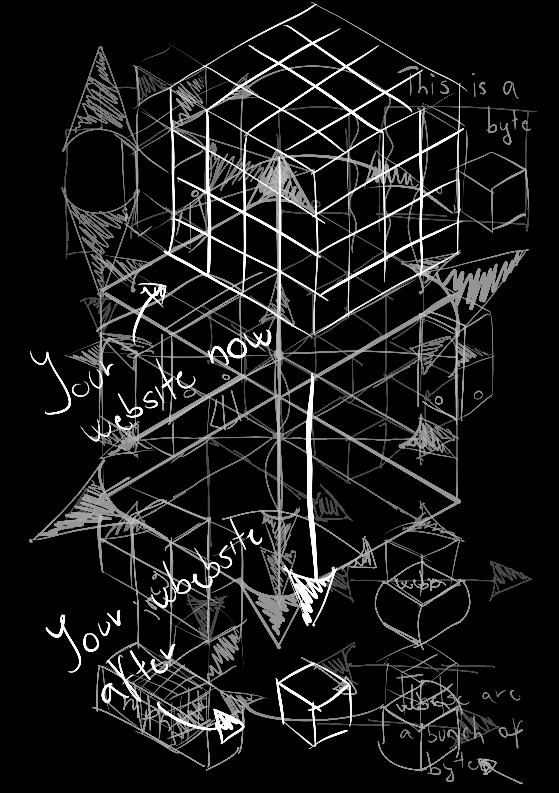

Merel Witteman - carbonfooter.nl
Framer Framed - Framer Framed
The studio
Merel is located in Rotterdam on the Volmariijnstraat, about 20 minutes walk from the station. Her shared space with Ono (another graphic designer — husband of Loes van Esch ) is one of the rooms in a large workshop on the first floor of the building. In this shared space there is a kitchen where we lunched together and had some nice and friendly conversation with each other.
The team and the atmosphere
Working with Merel was always a negotiation and based on involvement in the project from the very first moment. Since I started to work with her from August she knew that I was going to split my hours and she was very much opened to discuss the schedule, the workflow, the deliverables and trusted me on many levels. Merel was already working on this project with Danny Moons and already had a project plan (due to the Stimuleringsfonds subsidy) so when I arrived we developed my schedule based on the phase that they were in. Since this was a research based project the workflow was quite opened from my side to not only contribute on a graphic level but also content wise.
Projects and tasks
The project is called carbonfooter.nl , a website that aims to ground awareness about digital carbon emission by estimating carbon emissions of websites on ‘local data’ specific to The Netherlands.
Tasks by Merel:
-to understand the model of the calculation on a basic level
-to research similar website and their visual language
- to develop a visual language and a layout (storyboard) for carbonfooter.nl
Self initiated mini projects:
- to develop a fairly new technique to make super small (few kB) animated content using variable font format
- to make tutorial for this technique
- to make tutorials for the tips that the website gives to reduce carbon emissions of a website (optimise images, video and fonts, code)
Skills developed
Through this experience I saw how to survive as a freelancer designer and how important is to build a network. I also peaked into writing application and taking part in a project subsided by Stimuleringfonds. One of the days I attended to the official kick-start of the project where I saw how different teams that got the same funds came together and pitched their plan to each other and to the fund’s organisation. Learned to plan and structure my own time and create a “healthy work-life balance” (whatever is that). My practice as a graphic designer also enriched by looking at the process of making from a sustainable/ energy saving point of view.
Highlights
The website
Some examples of the variable animations
Variable animation tutorial
First layout sketch
Some hand-drawn sketches

Visual research
The space
Framer Framed is located in Amsterdam-Oost. The closest station is Amsterdam, Mudierpoort, where I walked directly to the expo space. The building s located on the Oranje-Vrijstaatkade, on the bank of the Rignvaart, next to the Municipality of Amsterdam Oost. The building’s facade is the old factory building’s brick wall and the expo space is a modernised steel, glass, structure. Within the building there is a large expo space and a book shop corner. Above this space there is a storage/printing room, and a couple of workshop spaces. Behind the expo space there are the office rooms which I shared with about 10-12 people during my intern period.
The team and the atmosphere
Working at Framer Framed was a completely different experience since here I was part of a bigger, more organised team with a much larger budget. The role of me as an intern was to make in-house graphic design for their exhibitions, workshops, events, social media platforms, and their website. As they trusted me more and more I also got a bigger book project to work on. Here I felt much more focused and organised because there were a clearer hierarchy in the decision making. Although the book project — I have to admit — was quite chaotic in terms of material and the roles of the team members too (>see projects and tasks section). Framer Framed has a model of working with many different professionals from many different cultural background which is due to their direct dependency on the Ministry of Culture. Their team is quite small but the budget to collaborate iis quite big so they mostly hire freelancer -designers, -artists, -curators for a particular project for set period of time. They have different activities within the organisation. First and foremost they organise 3-4 big exhibitions in the large space and plenty of smaller ones in their small space and outside the building too. They offer space for workshops like The Open Atelier, Queer Open Stage and they are also closely related to Molenwijk — an educational space for the neighbourhood of Amsterdam Oost. They are hardcore into culture production as one of the 5 similar spaces across The Netherlands.
Projects and tasks
As I mentioned above, I was functioning basically as the in—house designer for them so I got many task related to their activities. But, I also got a book project which is about redesigning Taring Padi’s (an Indonesian radical art collective) old documentation book of their 20+ years of political activism.
In-house design tasks:
-Framer Framed business card
-Wall texts, signs, QR codes (print and vinyl)
-Posters, flyers, banners, social media posts
-Advertisements for different journals (Errant Journal, Metropolis M, Simulacrum)
Taring Padi book project:
- Redesign the old bilingual book
-Extracting English and Indonesian text from the old pdf and un-formatting it
-Format the text and feed it into “Publish” (the hybrid publishing tool designed by Remco van Bladel)
-Re-collect, re-organise, re-export, all the images (around 500 images) scattered around in different folders
-Re-caption all the images and put them in order, based on the chapter structure of the old book
-Make a dummy version using the formatted text from ‘Publish’ and the re-captioned and structured images
-Print one copy
(As a side task I also made a documentation of the errors of ‘Publish’ so Remco can use its to apply subsidy to develop this project further in 2025)
Skills developed
At Framer Frame I was mostly experiencing how to take initiative and develop my own project within a large organisation which caused me a lot of headache since I had to select which steps of the project worth to communicate with the decision makers and which part I should communicate with my team mates and how (the most direct way because everyone was highly focused on their own tasks). During the internship I met and worked and collaborated with a lot of different people from many different cultural and educational background which III see as a test of my communication skills. I wrote many emails, and prepared a few presentations. Also learned how to put down a coffee mug in complete silence. energy saving point of view.
Highlights
Taring Padi - re-designed book (dummy)